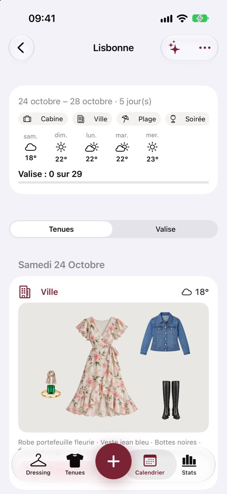

NOUVEAU · MA VALISEPars légère.
Pars légère.
Pas à court d’idées.
Un week-end à deux ou une semaine au soleil ? Indique ta destination, tes dates et tes activités. InspyDressing prépare tes tenues avec les pièces de ton dressing.
- Des looks adaptés au séjour et à la météo.
- Une valise à cocher, pièce par pièce.
- Ta styliste pour les dernières hésitations.
« Une tenue pour le dîner de samedi ? »
Même en voyage, ta styliste est du voyage.
LISBONNE
QUELQUES JOURS. PLEIN DE POSSIBLES.LES BONNES PIÈCES. AU BON ENDROIT.
QUELQUES JOURS. PLEIN DE POSSIBLES.
